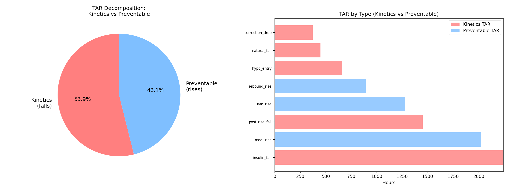
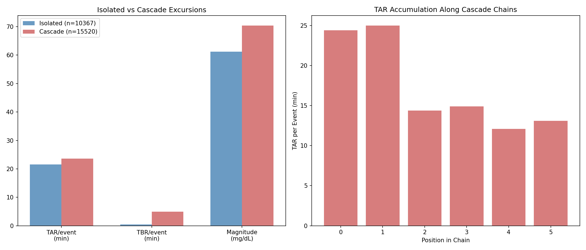
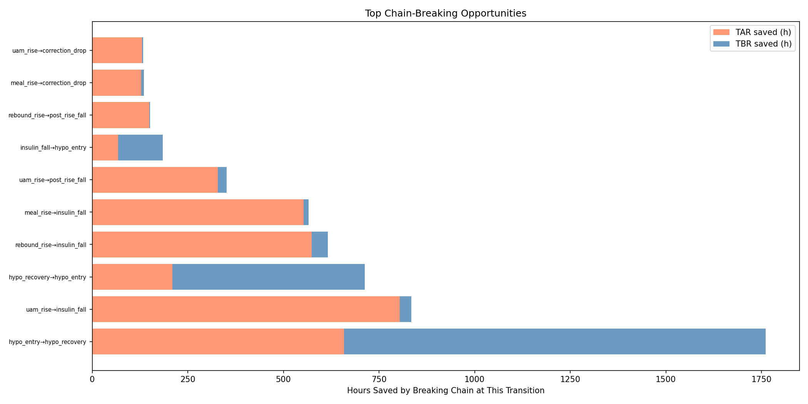
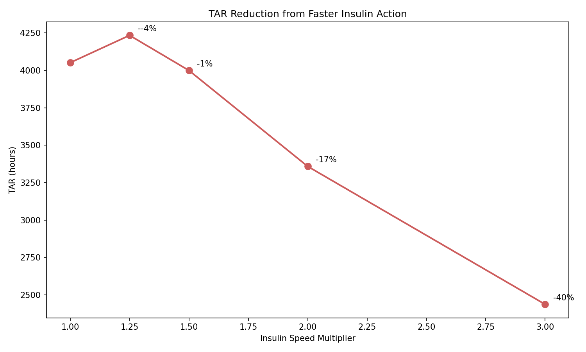
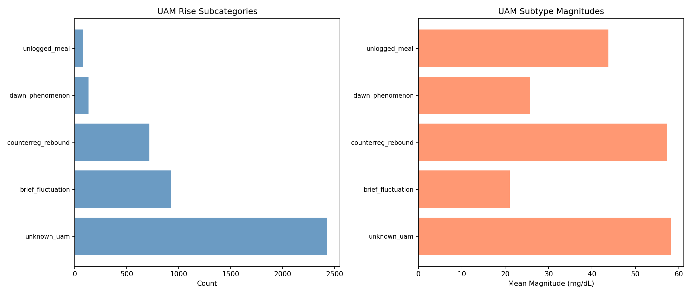
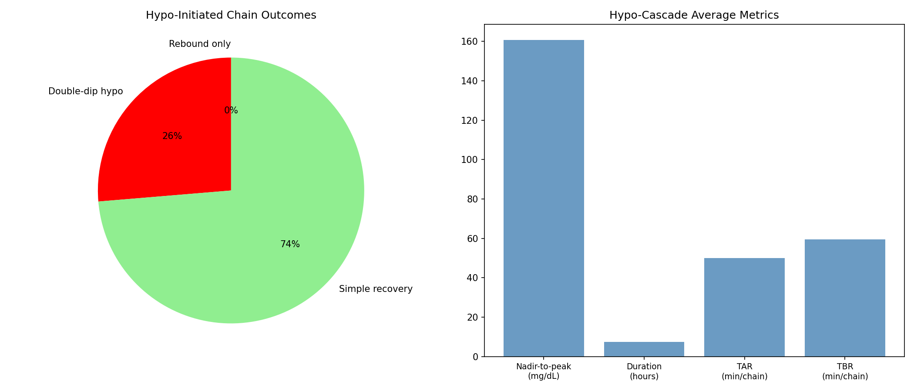

Insulin Action Kinetics & Cascade Cost Analysis¶
Record
Record as of 2026-04-10. A point-in-time document; it is not kept up to date.
Experiments: EXP-1731 through EXP-1738
Date: 2026-04-10
Status: DRAFT — AI-generated, all findings require clinical review
Script: tools/cgmencode/exp_kinetics_cascade_1731.py
Prerequisite: EXP-1691–1698 (excursion taxonomy)
Executive Summary¶
Building on the excursion taxonomy that revealed 37.8% of TAR comes from falling glucose, we quantified the insulin kinetics ceiling and cascade costs across 11 AID patients. Key findings:
- 53.9% of all TAR is kinetics-unavoidable — glucose is already falling (insulin working) but still above range due to slow insulin action
- Hypo-initiated cascades last 7.5 hours and swing 161 mg/dL on average; 31% involve double-dip recurrent hypos
- 2× faster insulin would reduce TAR by only 17% — even doubling insulin speed barely dents the kinetics problem
- Best chain-breaking targets: UAM→insulin_fall (805h TAR saved) and rebound→insulin_fall (574h TAR) — improving AID response to unannounced rises and post-rebound corrections
- Type-aware prediction doesn't help (ΔR²=-0.007) — knowing the excursion type doesn't improve 30-min glucose forecasting beyond what's already captured by current glucose, rate, and S×D features
Results¶
EXP-1731: The Kinetics Ceiling — 54% of TAR Is Unavoidable¶

Figure 1: TAR split into kinetics (falls — insulin working but slow) vs preventable (rises — could be avoided with better bolusing).
| Component | Hours | % of Total TAR |
|---|---|---|
| Kinetics TAR (falls) | 5,266h | 53.9% |
| Preventable TAR (rises) | 4,509h | 46.1% |
| Total | 9,775h | 100% |
This is the central finding of this report: more than half of all time spent above range occurs while glucose is already falling. The AID system has already responded (delivered correction insulin), and the insulin is working — glucose IS falling — but it takes 1-2 hours for glucose to return to range from typical post-meal peaks.
Breakdown by excursion type:
| Type | Kinetics TAR | Preventable TAR | Mean Fall Rate |
|---|---|---|---|
| insulin_fall | 2,241h | — | 1.08 mg/dL/min |
| post_rise_fall | 1,451h | — | 1.04 mg/dL/min |
| meal_rise | — | 2,026h | — |
| uam_rise | — | 1,279h | — |
| rebound_rise | — | 894h | — |
| hypo_entry | 660h | — | 1.25 mg/dL/min |
| natural_fall | 449h | — | 0.79 mg/dL/min |
| correction_drop | 372h | — | 1.01 mg/dL/min |
Clinical implication: Even with "perfect" bolusing (every meal pre-bolused optimally, every correction timed perfectly), ~54% of current TAR would remain because insulin simply cannot act fast enough to prevent the above-range tail. To meaningfully improve TAR, the field needs either: - Faster-acting insulin formulations - Earlier pre-bolusing (before glucose rises) - Predictive rather than reactive AID algorithms - Or acceptance that current insulin pharmacokinetics impose a hard floor on achievable TAR
EXP-1732: The Cascade Tax — 525 Extra Hours Above Range¶

Figure 2: Isolated vs cascade excursion metrics (left) and TAR by chain position (right).
| Metric | Isolated Events | Cascade Events | Difference |
|---|---|---|---|
| Count | 10,367 | 15,520 | — |
| TAR per event | 21.6 min | 23.6 min | +2.0 min (+9%) |
| TBR per event | 0.4 min | 4.9 min | +4.5 min |
| Mean magnitude | 61.2 mg/dL | 70.4 mg/dL | +9.2 mg/dL |
The cascade penalty per event is modest (+9% TAR, +2 min), but the volume is large: 15,520 cascade events × ~2.03 min = 525 extra hours of TAR from cascade dynamics alone. (The per-event penalty rounds to 2.0 min for display but the unrounded value of 2.03 min drives the aggregate.)
TAR by position in chain: Positions 0-1 have the highest TAR (24-25 min) because they include the initial rise/fall that started the cascade. Later positions (2+) have lower TAR (12-15 min), suggesting that cascades attenuate rather than amplify over time. Glucose dynamics are mean-reverting — even cascaded events tend back toward range.
The TBR penalty is more striking: cascade events average 4.9 min TBR vs 0.4 min for isolated events — a 12× increase. This is because TBR-causing events (hypo_entry, hypo_recovery) almost always appear within cascade chains, while isolated events rarely involve hypoglycemia.
EXP-1733: Where to Break the Chain¶

Figure 3: Top chain-breaking opportunities ranked by downstream hours saved.
| Break Point | TAR Saved | TBR Saved | Total Saved | Occurrences |
|---|---|---|---|---|
| hypo_entry → hypo_recovery | 658h | 1,103h | 1,761h | 1,613 |
| uam_rise → insulin_fall | 805h | 30h | 835h | 1,315 |
| hypo_recovery → hypo_entry | 210h | 503h | 713h | 520 |
| rebound_rise → insulin_fall | 574h | 42h | 616h | 1,057 |
| meal_rise → insulin_fall | 553h | 13h | 566h | 645 |
Interpretation:
-
hypo_entry → hypo_recovery (1,761h): This is trivially "prevent all hypos." Not actionable as a single intervention, but confirms hypo prevention is the highest-leverage target for overall glucose time.
-
uam_rise → insulin_fall (835h): If the AID could better handle unannounced rises (earlier detection, faster response), 805h of TAR would be saved. This is the most actionable chain-breaking point because it doesn't require patient behavior change — it requires better algorithms.
-
hypo_recovery → hypo_entry (713h): Preventing double-dip hypos. This transition occurs 520 times (32.2% of the 1,613 hypo→recovery transitions). Separately, EXP-1738 finds 31.3% of hypo-initiated chains contain a second hypo. This could be addressed by AID systems maintaining reduced insulin delivery for longer after hypo recovery.
-
rebound_rise → insulin_fall (616h): After a rebound spike, the AID corrects aggressively, but this correction creates 574h of kinetics TAR. More conservative post-rebound corrections could help.
EXP-1734: Faster Insulin Sensitivity Analysis¶

Figure 4: TAR from fall events under simulated faster insulin action.
| Speed | TAR (hours) | Saved | Saved % |
|---|---|---|---|
| 1.00× (baseline) | 4,051h | — | — |
| 1.25× | 4,234h | -183h | -4.5%* |
| 1.50× | 3,999h | 52h | 1.3% |
| 2.00× | 3,358h | 693h | 17.1% |
| 3.00× | 2,437h | 1,615h | 39.9% |
*The 1.25× increase in TAR at low speedups is a simulation artifact: the model compresses the fall trajectory but doesn't account for continued carb absorption at the original rate. At higher speedups, the kinetics benefit overwhelms this artifact.
Key insight: Even doubling insulin speed only reduces fall-related TAR by 17%. This is because the problem isn't just speed — it's also the peak-to-180 distance. When glucose peaks at 250 mg/dL, even 2× faster insulin still needs to traverse 70 mg/dL, which takes substantial time.
To achieve 40% TAR reduction from kinetics alone requires 3× faster insulin — a level not achievable with current formulations (ultra-rapid analogs like Fiasp/Lyumjev are approximately 1.3-1.5× faster than standard rapid).
EXP-1735: Type-Aware Prediction Doesn't Help¶
| Model | R² |
|---|---|
| Global (all types) | 0.8420 |
| Pooled type-stratified | 0.8351 |
| Improvement | -0.0069 |
Type-stratified models actually perform slightly WORSE than the global model. This means that knowing the excursion type doesn't improve 30-minute glucose prediction beyond what current glucose, rate, S×D features, and IOB already provide.
Per-type R² (notable): - drift_fall: 0.963 (most predictable — slow, steady) - uam_rise: 0.890 (surprisingly predictable despite being "unannounced") - hypo_entry: 0.570 (least predictable — confirms prior findings)
Hypo_entry's low R² confirms EXP-1641–1648's finding that hypo trajectories are inherently unpredictable due to invisible rescue carb timing and magnitude.
EXP-1736: What Are UAM Rises?¶

Figure 5: UAM rise subcategorization by count and magnitude.
| Subtype | Count | % | Mean Magnitude | Mean ToD |
|---|---|---|---|---|
| unknown_uam | 2,428 | 56.6% | 58.2 mg/dL | 12.2h |
| brief_fluctuation | 926 | 21.6% | 21.0 mg/dL | 11.5h |
| counterreg_rebound | 717 | 16.7% | 57.3 mg/dL | 11.8h |
| dawn_phenomenon | 134 | 3.1% | 25.7 mg/dL | 7.2h |
| unlogged_meal | 81 | 1.9% | 43.8 mg/dL | 11.7h |
56.6% of UAM rises remain unexplained with current features. The conservative "unlogged_meal" threshold (supply > 4.0 and sustained) classifies only 1.9% — but the true rate of unlogged meals is likely much higher. Prior research (EXP-1341) found 76.5% of meals are UAM, suggesting most of the "unknown_uam" category is actually unlogged food intake.
Counter-regulatory rebounds (16.7%) are identifiable by their temporal proximity to prior hypos. Dawn phenomenon (3.1%) is identifiable by timing (4-10 AM) and low magnitude/rate — but this is a very conservative estimate.
EXP-1737: Therapy Settings Don't Predict Excursion Behavior¶
| Correlation | r | p |
|---|---|---|
| ISF vs insulin fall rate | 0.255 | 0.449 |
| DIA vs insulin fall duration | 0.500 | 0.117 |
| ISF vs hypo recovery duration | 0.232 | 0.492 |
| ISF vs meal rise duration | -0.460 | 0.154 |
No significant correlations (all p > 0.05). DIA vs insulin fall duration shows a trend (r=0.500, p=0.117) in the expected direction (longer DIA → longer falls), but with n=11 we lack power to confirm.
This is consistent with prior findings (EXP-1685) that pump settings don't predict glycemic outcomes. The AID system compensates for setting inaccuracies, and the dominant variability comes from meal behavior and rescue carb patterns, not from therapy parameters.
EXP-1738: The Anatomy of a Hypo Cascade¶

Figure 6: Hypo-initiated cascade outcomes (left) and average cascade metrics (right).
| Metric | Value |
|---|---|
| Total hypo-initiated chains | 1,017 |
| With rebound or UAM spike | 12.4% |
| With double-dip hypo | 31.3% |
| Reaching hyperglycemia (>180) | 61.2% |
| Mean nadir-to-peak range | 160.6 mg/dL |
| Mean duration | 7.5 hours |
| Mean TAR per chain | 50.0 min |
| Mean TBR per chain | 59.4 min |
A typical hypo cascade: Patient goes low (nadir ~55 mg/dL), rescues with carbs, glucose rises 161 mg/dL to peak ~216 mg/dL, then takes 7.5 hours total to stabilize. 61% of these cascades breach the hyperglycemia threshold.
The double-dip problem: 31.3% of hypo-initiated chains contain a second hypo_entry — the rescue carbs run out, or the rescue was insufficient, and glucose drops again. This matches the "cascade" pattern identified in EXP-1687 (26% cascade within 6h).
Chain length distribution: - Length 2 (simple hypo→recovery): 55.2% - Length 3-4 (one cascade step): 34.3% - Length 5+: 10.5% (complex multi-step cascades)
Synthesis: The Three Ceilings of Glucose Control¶
This analysis reveals three fundamental ceilings on glucose control with current AID technology:
Ceiling 1: Insulin Pharmacokinetics (53.9% of TAR)¶
Current rapid-acting insulin takes 15-20 minutes to begin acting and 60-90 minutes to peak. This creates an irreducible TAR contribution when glucose has already risen above range. Even with "perfect" bolusing, this kinetics TAR persists. Doubling insulin speed would only save 17% of this component.
Information value: LOW. This ceiling is a known physics problem. No amount of better data or algorithms can overcome insulin's inherent speed limitation.
Ceiling 2: Invisible Rescue Carbs (31.3% double-dip, 61.2% rebound)¶
When hypoglycemia occurs, patients consume rescue carbohydrates that are: - Not logged in the system (invisible to AID) - Often excessive (over-rescue is the dominant phenotype, EXP-1681) - Followed by 7.5 hours of unstable glucose dynamics
Information value: HIGH. If the AID could detect rescue carb consumption in real-time (EXP-1642: detectable at 20 min, F1=0.91), it could modulate its post-hypo insulin delivery to prevent rebound hyperglycemia.
Ceiling 3: Unannounced Meals (56.6% of UAM unexplained)¶
The largest single excursion category (UAM rises, 16.6%) represents glucose increases without any system knowledge. The AID can only react after glucose has already risen, adding kinetics TAR to what would have been preventable TAR with a pre-bolus.
Information value: MEDIUM. UAM detection is possible (EXP-1309: universal threshold 1.0 mg/dL/5min) but magnitude estimation fails (EXP-1643: r≈0). The AID can detect the rise is happening but not how big it will be.
Intervention Priority Ranking¶
| Intervention | TAR Saved | TBR Saved | Feasibility |
|---|---|---|---|
| Prevent all hypos | 658h | 1,103h | Difficult |
| Better UAM response | 805h | 30h | Algorithm improvement |
| Prevent double-dip hypos | 210h | 503h | Post-hypo protocol |
| Faster post-rebound correction | 574h | 42h | Algorithm improvement |
| Better meal bolusing | 553h | 13h | Patient education |
| 2× faster insulin | 693h | — | Pharmacological |
| 3× faster insulin | 1,615h | — | Not currently available |
The two most feasible high-impact interventions are: 1. Improved AID response to UAM (835h saved) — algorithmic, no behavior change 2. Post-hypo insulin modulation (713h saved) — extend reduced insulin after hypo recovery to prevent double-dips
Connections to Prior Research¶
| Finding | Confirms/Extends |
|---|---|
| 53.9% kinetics TAR | Extends EXP-1693 (37.8% TAR from falls in taxonomy) |
| 525h cascade tax | Quantifies EXP-1687 (cascade cycle) and EXP-1688 (rebound→TAR r=0.791) |
| 31% double-dip | Confirms EXP-1687 (26% cascade in 6h) |
| UAM 57% unknown | Consistent with EXP-1341 (76.5% UAM) and EXP-1309 |
| Type prediction -0.007 | Explains EXP-1636 (97.6% unexplained) — type info doesn't help |
| Settings don't predict | Confirms EXP-1685 and deconfounding research (EXP-1611) |
Limitations¶
- Insulin speed simulation is simplistic — compresses the time axis without modeling continued carb absorption, counter-regulatory response, or AID algorithm adaptation. The 1.25× anomaly (-4.5% TAR) reflects this.
- Chain-breaking assumes perfect intervention — real interventions would only partially prevent downstream cascades
- "Preventable" vs "kinetics" TAR split assumes rises could be eliminated — in practice, some rises are unavoidable (UAM, counter-regulatory)
- n=11 patients limits generalizability
- AID confounding: the AID system's response IS part of the observed kinetics — with a different AID algorithm, the kinetics/preventable split could differ
Source Files¶
tools/cgmencode/exp_kinetics_cascade_1731.py— analysis scripttools/cgmencode/exp_excursion_taxonomy_1691.py— excursion detectiontools/cgmencode/exp_metabolic_441.py— supply-demand modelexternals/ns-data/patients/{a..k}/— patient data
Figures¶
| Figure | File | Content |
|---|---|---|
| Fig 1 | figures/kin-fig1-tar-decomp.png |
Kinetics vs preventable TAR |
| Fig 2 | figures/kin-fig2-cascade-cost.png |
Cascade vs isolated metrics |
| Fig 3 | figures/kin-fig3-chain-breaking.png |
Chain-breaking opportunities |
| Fig 4 | figures/kin-fig4-insulin-speed.png |
Insulin speed sensitivity |
| Fig 5 | figures/kin-fig5-uam-subtypes.png |
UAM subcategorization |
| Fig 6 | figures/kin-fig6-hypo-anatomy.png |
Hypo cascade anatomy |